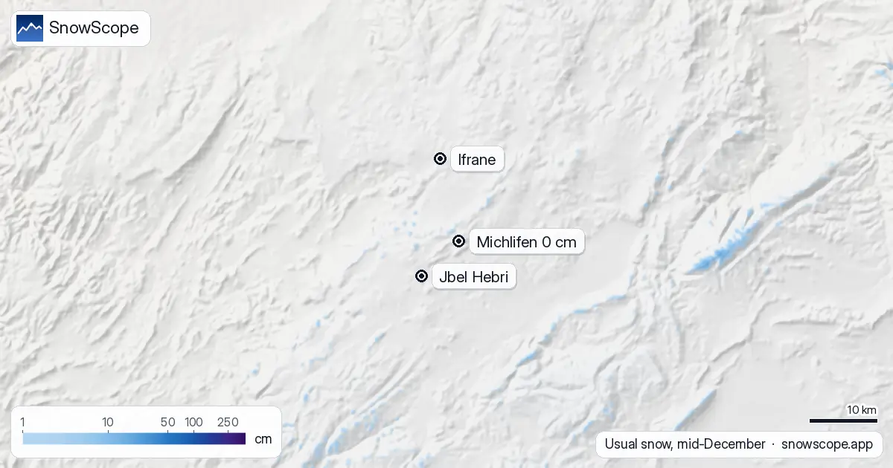

Michlifen and Ifrane in December: is the snow there?
Ifrane under snow is a postcard image. But to ski at Michlifen in December, our 46-winter history is clear: most of the time, there isn't enough. On 15 December, the slope is nearly bare (under 5 cm) in 89 % of winters.
See the live snow forecast for Michlifen ski resort in the SnowScope appSnow depth, powder alerts and the 3D map, free.A small resort, at low altitude
Michlifen sits 13 km as the crow flies from Ifrane, by our calculation. We track its snow at 1870 m, 1970 m and 2070 m: that is much lower than Oukaïmeden, whose mid-mountain is at 2929 m, and it changes everything. In the Middle Atlas, snow falls often, but it doesn't hold long.

December, in numbers
On 15 December, the typical height is 0 cm at all three altitudes, and even a generous December, one winter in ten, gives only 5 cm at mid-mountain. On 31 December, it is 0 cm in a typical winter, 17 cm in a big winter, and the slope stays nearly bare in 83 % of winters.
The first lasting snow usually arrives around 14 December at mid-mountain, but it disappears fast: a typical winter has only 24 days with snow on the ground.

Good winters happen
Last winter was the exception that proves the rule: 50 cm at mid-mountain on Christmas Day 2025, and a peak of 51 cm over the season, with 48 snow days. At nearby Jbel Hebri, the story is the same: 48 cm on Christmas Day 2025, while a typical winter there counts 20 snow days.
The rest of the time, Middle Atlas snow lives in a few days: one storm, one white weekend, then the thaw.
Michlifen or Oukaïmeden?
To ski in December, Oukaïmeden is clearly safer: 16 cm at mid-mountain on 15 December in a typical winter, and 43 % of winters with at least 25 cm, against 2 % at Michlifen. Even up there, December stays a gamble. Michlifen plays by the day, in January or February, after a snowfall.
Tips for skiers
- Don't plan a December ski trip to Michlifen: watch for a snowfall and leave right away.
- For photos of Ifrane under snow, a day after a storm is usually enough.
- Middle Atlas roads: watch for early-morning ice after a snowfall.
- If you insist on December skiing, look instead toward Oukaïmeden, and check our map before you go.
References and credits
- OpenSkiMap (mapped lifts and runs) openskimap.org/
About these numbers
Snow numbers: SnowScope snow history, 46 past winters (1980-81 to 2025-26) at the base, mid-mountain and top heights given, a reconstruction of past snow for an area corrected for height (ERA5-Land based; Snow_Hydro 1 km for Morocco), not the ski area's own snow reports. Current snow: the SnowScope snow map. Lifts, runs and heights: OpenSkiMap mapping. Prices: the official pages listed below, read on 13 November 2026; dynamic prices change with the date and with demand.
Cite this report
For research, teaching or the press: the numbers and charts are free to reuse under CC BY 4.0 with this citation.
SnowScope (2026), Michlifen and Ifrane in December: is the snow there?, https://snowscope.app/blog/en/2026/11/michlifen-ifrane-neige-decembre-moyen-atlas.html, accessed 2026-11-14
SnowScope (Atlas Labs). (2026, November 14). Michlifen and Ifrane in December: is the snow there?. SnowScope snow reports. https://snowscope.app/blog/en/2026/11/michlifen-ifrane-neige-decembre-moyen-atlas.html
BibTeX
@misc{snowscope2026michlifenifraneneigedece,
author = {{SnowScope (Atlas Labs)}},
title = {Michlifen and Ifrane in December: is the snow there?},
year = {2026},
month = nov,
howpublished = {\url{https://snowscope.app/blog/en/2026/11/michlifen-ifrane-neige-decembre-moyen-atlas.html}},
note = {Published 2026-11-14 13:29 UTC; accessed 2026-11-14}
}· CC BY 4.0 · Methods, data and tools →
Michlifen ski resort: snow and temperature by height, this winter vs last (tools) →
Follow Michlifen ski resort
Free: a message when fresh snow is coming, and the forecast every morning.
More snow reports

The ski resorts of the Atlas have no snow on their slopes today. Our snow model only finds snow on the highest summits: about 80 km² of snow-covered …

Oukaimden (Morocco) has the deepest snow in the Atlas (Morocco) today, with about 1 cm on its upper slopes. Habri follows with 0 cm, then Michlifen …

The ski resorts of the Atlas have no snow on their slopes today. Our snow model only finds snow on the highest summits: about 60 km² of snow-covered …